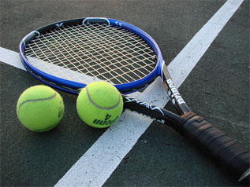
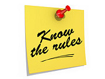
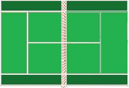

Before getting to know the rules or how to play,
the first thing you'll need to know when starting
tennis is what you need to play. While there are many
types of equipment used in tennis, the main ones to be
concerned with are these: the racket, the ball, and the court.
We'll start with the balls. When purchasing tennis balls, it is recommended
to choose a brand approved by the "USTA"(United States Tennis Association).
Usually this will be written somewhere on the packaging. I recommend Penn or Wilson.
Next is the racket. In terms of choosing a racket, the most important factor is how it feels.
Before buying, hold it and take a few practice swings. As long as it is not noticeably awkward,
there should be no major problems. Higher level players may have more refined preferences,
but for someone just starting out this should be fine.
Finally, in order to play tennis, one needs a tennis court.
The different varieties of tennis courts will be covered later in this tutorial. Just know that you need a court to play.
Now that you have your equipment, you are ready to start learning how to play.
Tennis matches are composed of three components: the game, the set, and the match.
A typical regulation match is one match, which consists of the best of three sets, which are played the first to six games,
which are played as the first to four points.
In terms of scoring, tennis is very different from other sports. Points are scored in the order of
0 - love, 1 - 15, 2 - 30, 3 - 40, 4 - game. In the event that two players have 40 points at the same time, It is referred to as a deuce.
In this event, the first player to score two consecutive points wins. If one player scores and then the other scores as well, before the first has earned their second point,
the score is reset to deuce.
When a player has successfully scored their fourth point they have won the "game." When the sum of the two players' wins is an odd number the two players swap court sides.
When a player has won six games, they have won one "set." Finally, when a player has won the best of three sets,
they have won the "match."
Next we will discuss the court itself. In tennis, there are three types of courts: asphalt, turf, and clay.
Professionally, turf courts are very common, however, typical public courts tend to be asphalt. Note: when playing on asphalt courts
it is recommended that you wear either tennis shoes, or sneakers with non-mark outsoles, so as to avoid scuffing the court.
Regardless of type, a tennis court is always divided the same way. The two smaller boxes towards the front are the service boxes, the boxes on the outer edges are the alleys,
the line at the back is the baseline, and the section in the back, while it has no official designation, is commonly referred to as "no-man's land."
What each of these sections is used for will be explained in the "Gameplay" section further in.
During gameplay, anywhere within these sections is legal for the ball to land in, with the exception of the alleys, which are only used in doubles.